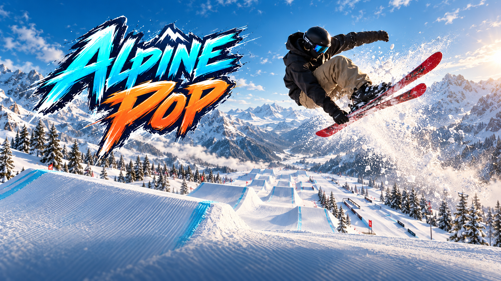

YOUR MOUNTAIN. YOUR STYLE.
One more lap.
Five park lines. Progression kickers to massive air. Rails to make your own.
Getting ready
We couldn’t start this lap.
Desktop browser recommended. First launch downloads the game; later visits reuse cached files.